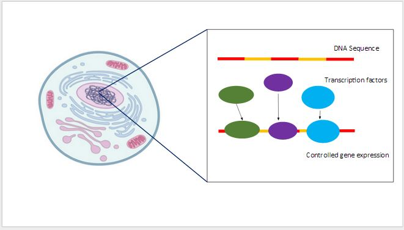
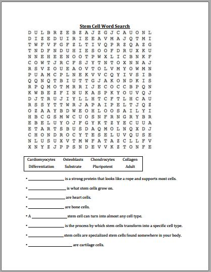

Resources for teachers: lesson plans, example slides, index and exercises
Teacher guide and lesson plan
Click to download PDF
We are so pleased you have decided to incorporate the Fluxx Stem Cell Card Game into your curriculum. As part of this free online resource, we would like to provide you some guidelines and suggestions in order to help you incorporate our product seamlessly into your classroom!
Where to find our product
You may already have found our website, where all of our materials are free and public. Our materials are available in a print-friendly format. In printing the cards, we recommend the use of cardstock or other thicker paper to ensure reusability. Cards can be printed double-sided or single-sided and adhered together.
Who this product is geared toward
In creating this product, we have targeted children in middle school, specifically 6th and 7th grade students. At this age, they have a basic understanding of cellular biology and are at a critical age in considering which subjects they like and want to continue in the future. We have geared this game to help them become familiar with the concept of stem cells. We hope our game provides them a fun way to satisfy their curiosity without overloading them with information.
How to use this in your classroom
Since this is an add-on to the normal science curriculum, we recommend you utilize it before a scheduled break or at the end of a busy week. It is a great way to give students a break from normal material while preparing them for a possible future in stem cell research and applications.
We recommend you use 1-2 class periods, depending on length of class to go through our material in sequential order:
Class 1:
>>>Navigating the website as a class, either using projector or going to a computer lab to allow all students to follow along.
>>>Reading through the informational powerpoint as a class and answering any initial question. After watching the video, a teacher could also pose a question regarding the content and have students navigate the website to find the answer.
>>>Explaining rules and gameplay. Using the website and re-reading the rules of the card game could be a possible homework assignment.
Class 2:
>>>Play the card game, by breaking the class up into groups of 3-4 people, moving desks to make a gameplay surface, and reviewing the rules as a group. Games take between 15-25 minutes, so depending on length of class, one or two games can be played.
>>>The same groups can work together to complete the wordsearch puzzle, using the cards as guides. Using the description of a new term or item relating to stem cells, groups must figure out the word and find it among the letters. This could be a possible homework assignment.
>>>Discussion questions can then be posed to help students think through the material they have been exposed to. This could be a class discussion and/or a possible homework assignment.
Lecture example
Click to download PPT
Screenshots of the example lecture slides are shown below:
Key concepts are described in the ppt file.

Exercises
Click to download the word search and its solution.
Click to download discuss questions PDF
A word Search game for stem cell jargon
Stem Cell Fluxx Discussion Questions
Goal: Present student with these questions after the lesson on stem cells and after the Fluxx game has been played. The questions are meant to promote a continued interest and thought on the topic of stem cells. Students are start a class discussion encouraged to think critically and apply their new knowledge of stem cells. These questions can be used to or be used as a homework assignment. Feel free to come up with your own discussion questions/ topics as well. The questions are in no particular order.
Questions:
1. What are some diseases that stem cells could help cure?
2. Where do stem cells come from?
3. How can doctors use stem cells to help patients?
4. What are some of the challenges that stem cell researchers face?
5. How long do you think it will take before stem cells are used clinically?
6. What are the benefits of using stem cells to treat diseases?
7. Are there any drawback of using stem cells as medicine?
8. Do you think it is ethical to use stem cells?
9. How is the game similar to using stem cells in real life?
10. Would you be interested in working with stem cells when you are older, why or why not?
11. What is the most confusing part about stem cells to you?
12. Had you heard about stem cells before this lesson?